R0-C1C · Settlement circulation repair
One reversible development proposal. Human visual approval remains pending; no public deployment or R0-C2 work.
Measurements and findings · Asset record · Local playable review
Actual browser captures: 1280 × 900, DPR 1, same fixed cameras, lighting, standard quality and Glass B. Thin plan annotations describe the real rendered world. Red marks removed routes; blue marks the primary route; green marks optional links; amber marks relocated town props.
Measured circulation network
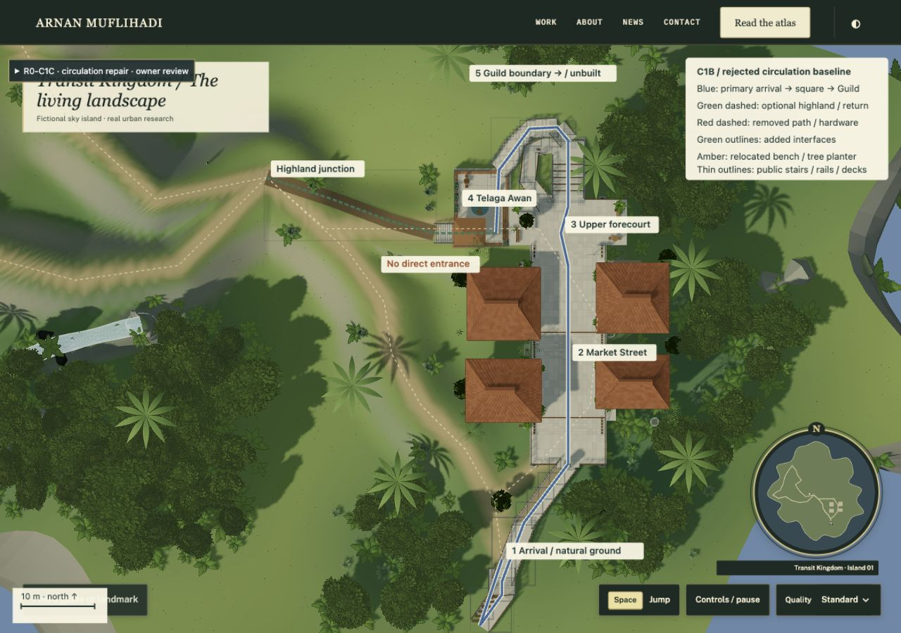
C1B rejected circulation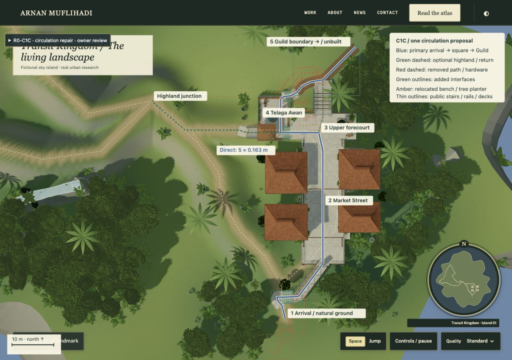
C1C proposal · owner review pendingNatural island arrival
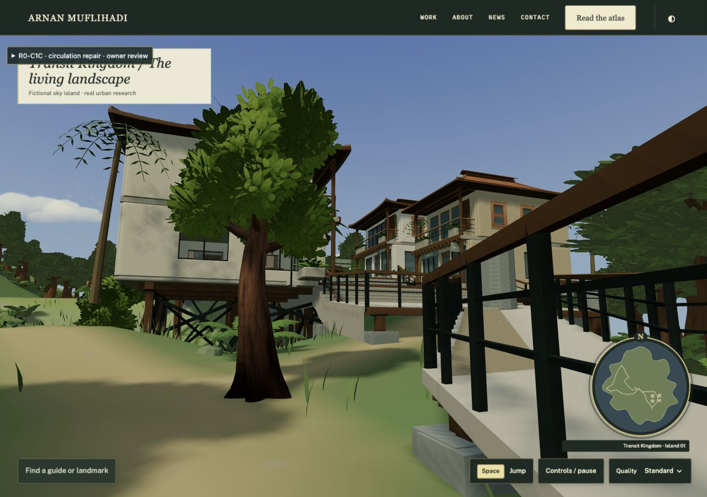
C1B rejected circulation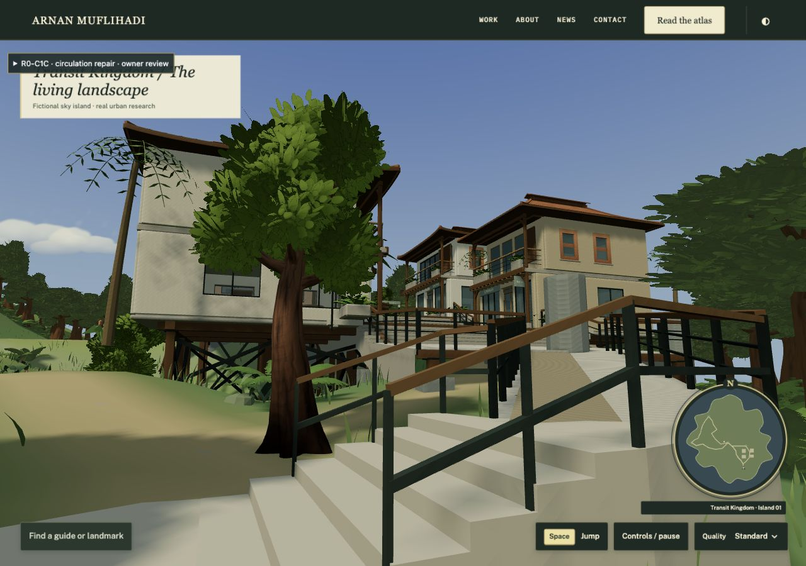
C1C proposal · owner review pendingMarket toward square
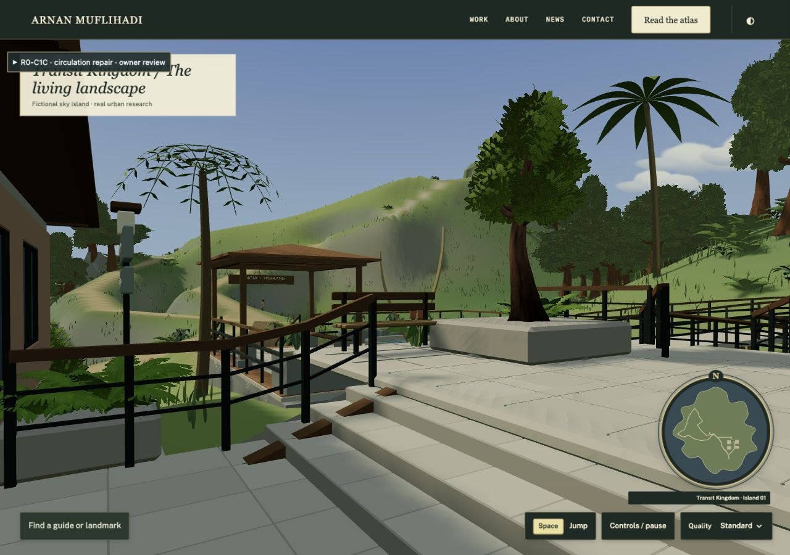
C1B rejected circulation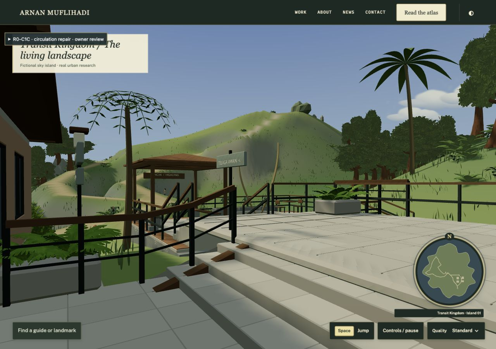
C1C proposal · owner review pendingDirect five-step entrance
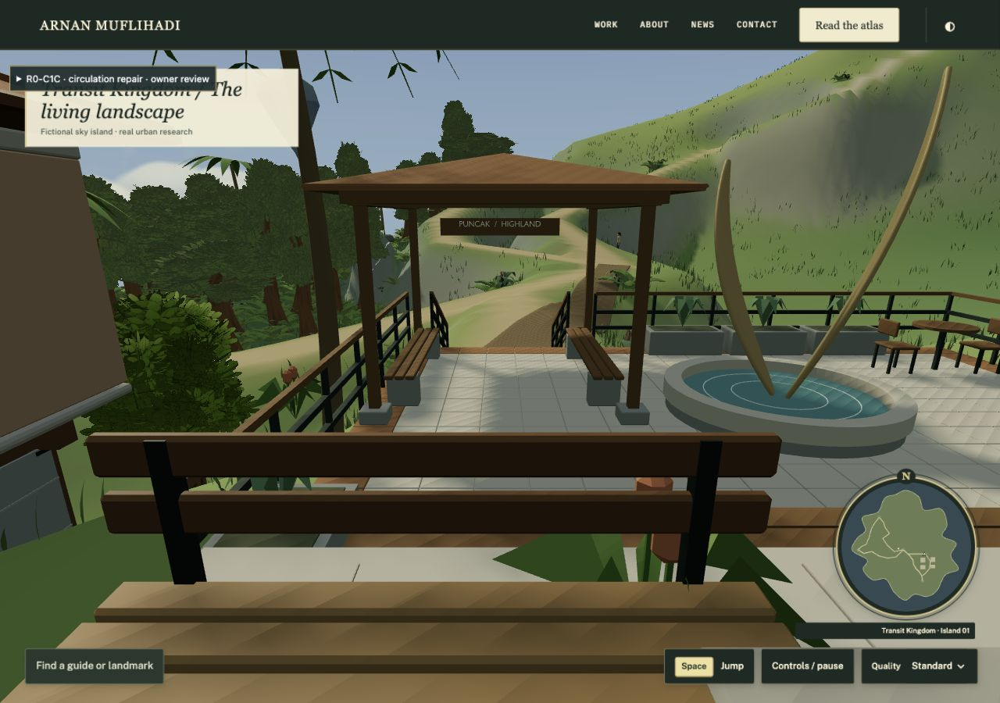
C1B rejected circulation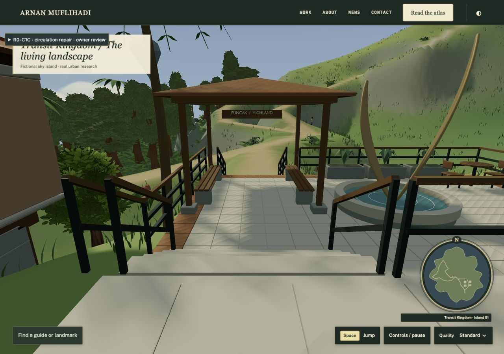
C1C proposal · owner review pendingCourt back toward market
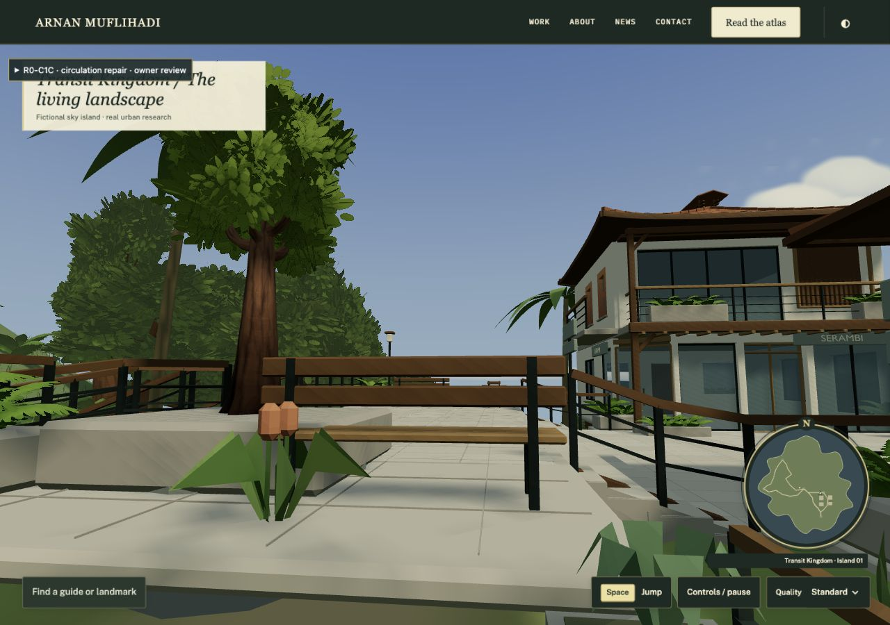
C1B rejected circulation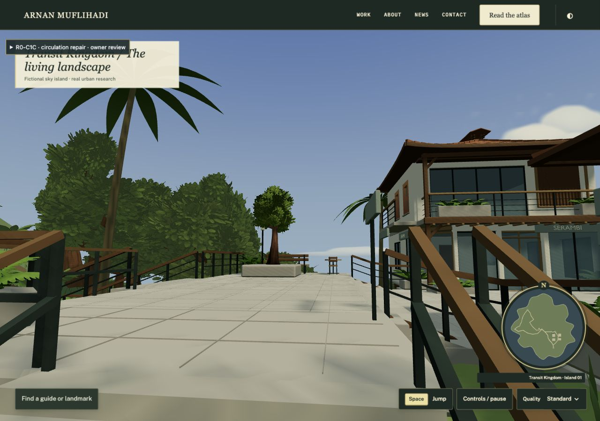
C1C proposal · owner review pendingComplete circulation hierarchy
C1B rejected circulation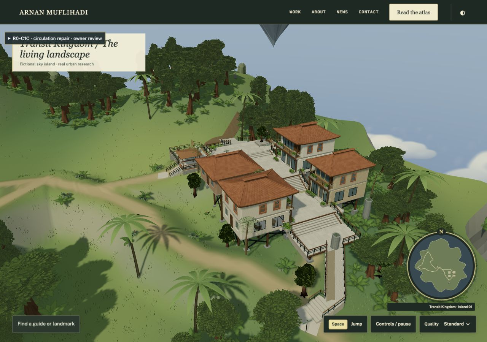
C1C proposal · owner review pending